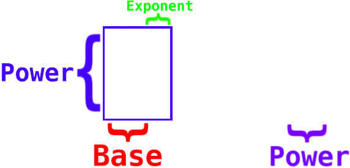
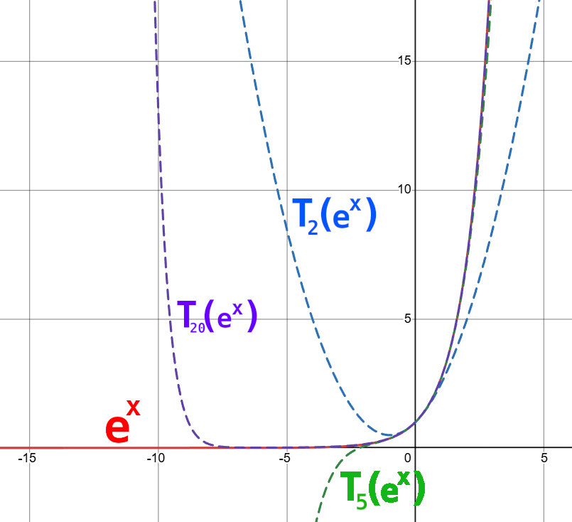

Components of exponentiation.
Just like how multiplication is a shorthand way of writing repeated addition, exponentiation is a shorthand of writing repeated multiplication.
For example,
\(
2 \cdot 4 = 2 + 2 + 2 + 2 = 8
\)
Exponentiation is written with a base and a smaller number in the top right corner of the base number.
\(
2^4 = 2 \cdot 2 \cdot 2 \cdot 2 = 16
\)
The number in the superscript is called the exponent, the number below it is called the
base and the outcome is called the power.
When talking about exponentiation, for example with \(2^4\), we say "two raised to the power of four" or "two to the power of four".
The exponent decides how often the multiplication will occur, and the base decides which number will be multiplied repeatedly.
For example: \(3^2 = 3\cdot 3,\:\:\:\: 3^3 = 3\cdot3\cdot3,\:\:\:\: 5^5 = 5\cdot5\cdot5\cdot5\cdot5,\:\:\:\: 9^2 = 9\cdot9.\)
Numbers raised to the second and third power have special names, that is any number to the power of 2 is that number squared, and to the power 3rd power is that number cubed.
Example: \(8^2\) can be referred to as "eight squared", and \(6^3\) can be referred to as "six cubed".
The exponent represents how often something gets multiplied, however what meaning does this have when the exponent is 0, or a negative number, or a fraction?
First, let's observe some rules on how math with exponents acts in general.
Since the exponent counts how many of the bases are multiplied with each other, If we multiply a power with its base it increases the exponent by one.
Example: \(2^3 \cdot 2 = (2\cdot2\cdot2)\cdot2 = 2^4\). Notice that 2 can be written as \(2^1\), so when we have two powers with equal bases, and they are multiplied together
we can simply add their exponents to get the result.
Example 2: \(4^3 \cdot 4^5 = 4^{3+5} = 4^8\). This works in the opposite way just as well. If we divide two powers with equal bases, then we can get the result by
subtracting the exponents.
Example: \(\frac{7^9}{7^5} = 7^{9-5} = 7^4.\)
From these rules we can deduce what powers with negative exponents or an exponent of zero will be.
We can rewrite any number to the 0th power as that number to the power of 1-1, for example, \(2^0 = 2^{1-1}\). From the exponent rules we covered
we know that a subtraction in the exponent is equivalent to diving two powers, therefore: \(2^0 = 2^{1-1} = \frac{2^1}{2^1} = \frac{2}{2} = 1\).
And notice that this result will be the same for every number, because every number divided by itself gives you one, with the exception of 0, because division by 0
is not defined.
Example: Find \((-18732.5723953)^0\)
Solution: By the rules for exponents, every number to the power of 0, except for 0 itself, is equal to 1. Therefore: \((-18732.5723953)^0 = 1\)
I'm going to present another argument for the fact that any number raised to the 0th power is equal to 1,
which flawlessly and naturally leads into a definition for negative exponents. Start with any base that isn't zero, say 2, raised to the third power.
If we divide it by 2 many times, we get a table of values for the exponents of 2.
\begin{array}{c|c}
2^3 & 8\\
2^2 & 4\\
2^1 & 2\\
2^0 & 1\\
2^{-1} & \frac{1}{2}\\
2^{-2} & \frac{1}{2^2} = \frac{1}{4}\\
2^{-3} & \frac{1}{2^3} = \frac{1}{8}
\end{array}
Notice that this table was calculated by dividing by 2 in each row, which follows the exponent laws and makes sense intuitively,
and that this pattern will be identical for any non-zero base. Therefore, we can deduce that for negative exponents,
a number raised to a negative exponent is equal to the reciprocal of that number raised to the positive exponent.
A reciprocal of a number is one divided by that number, for example, the reciprocal of three is one third.
This means that for negative exponents we can write them as a fraction of positive exponents, which are easy to calculate.
Example: Compute \(8^{-2}\)
Solution: \(8^{-2} = \frac{1}{8^2} = \frac{1}{64}\)
Note: Generally writing your solutions in terms of fractions is just fine, unless it is explicitly specified to carry out the division fully.
With the idea of exponentiation being repeated multiplication, what meaning does this have if you have an exponent of one half? Half a multiplication?
Once again, like with negative exponents, we can observe how exponentiation acts under these strange conditions and then perhaps draw conclusions about
the meaning of fractional exponents.
We already know from the sum exponent laws, how powers act under multiplication, but how about exponentiation?
For example, if we have \((4^2)^3\) how would we figure this out?
Let's just multiply it out and see if we can find some pattern. \((4^2)^3 = (4^2)(4^2)(4^2) = 4^{2+2+2} = 4^{2\cdot3} = 4^6.\)
Notice that taking a power to a power is the same as multiplying the power with itself that outer power amount of times, and via the exponent laws
that acts like repeated addition, and repeated addition is simply multiplication. So, we have deduced that raising a power to an exponent is equivalent
to multiplying the exponents. Now we can start studying fractional exponents.

Components of root extraction.
Let's consider \( 4^{\frac{1}{2}} \). If we square this number we get \( 4^{\frac{1}{2}^2} = 4^{2\cdot\frac{1}{2}} = 4^1\), so we can deduce that the original number is that number,
which when it is squared returns 4.
This is the definition of a square root. In this case, our calculation is the square root of two, written as such:
\(\sqrt{4}\). In this case, the answer is 2, as 2*2 = 4.
This way we can define any root, for example, the 3rd root of an amount gives the number, which when it is cubed returns that amount.
It is also called the cube root.
Example: Write \(\sqrt{25}\) as a base raised to an exponent and find the result.
Solution: \(\sqrt{25} = 25^{\frac{1}{2}} = (5^2)^{\frac{1}{2}} = 5^{2\cdot\frac{1}{2}} = 5^1\).
Example 2: Write \(64^{\frac{1}{3}}\) as a radicand and find the result.
Solution: \(64^{\frac{1}{3}} = \sqrt[3]{64} = \sqrt[3]{4^3} = 4\).
Lastly, for more complex exponents, calculation by hand, let alone mentally, is implausible,
however we can still write them as technically by hand calculable expressions.
Example: Express \(7^{\frac{23}{17}}\) as a radical of a power.
Solution: \(7^{\frac{23}{17}} = (7^{23})^{\frac{1}{17}} = \sqrt[17]{7^{23}}\) =
\(7^{\frac{23}{17}}\)
Simplify as far as possible.
\( \begin{array}{l} 1.) 81 & 6.) 3^{4-2} = 3^2 = 9 & 11.) 2 \\ 2.) 1 & 7.) 5^{6+(-3)} = 5^3 = 125 & 12.) 4^{6\cdot\frac{1}{3}} = 4^2 = 16 \\ 3.) 1 & 8.) 1 \cdot 4^{-2-(-4)} = 4^2 = 16 & 13.) (2^{2\cdot3}) = 2^6 = 64\\ 4.) \frac{1}{16} & 9.) 8^{\frac{1}{2}+(-\frac{1}{2})} = 8^0 = 1 & 14.) (\frac{2^0}{2^4})^{-\frac{1}{4}} = 2^{(-4)(-\frac{1}{4})} = 2^1 = 2 \\ 5.) \frac{1}{125} & 10.) 6^{-\frac{1}{2}+\frac{5}{2}} = 6^\frac{4}{2} = 6^2 = 36 & 15.) \frac{\sqrt{64}}{2^3} = \frac{8}{8} = 1 \\ \end{array} \)
You can define exponentiation for every complex number, via the taylor expansion of the exponential function.
The taylor expansion of a function is a polynomial which describes the function around a certain point or on the entire set \(\mathbb{R}\) or \(\mathbb{C}\).
If you had a way to easily compute \(e^x\) at any point on the complex plane, you could calculate every number to the power of every number with ease.
For example, if you wanted to compute
You would write it in terms of an exponential function, that is:
Then you could simply plug it into the formula for the exponential function or express the exponent in polar form and compute it using:

The exponential functions and various taylor polynomials of it, with the subscript denoting how many terms were taken.
The taylor expansion of \(e^z\) is:
\[
\sum_{n=0}^{\infty}{\frac{z^n}{n!}} = 1 + z + \frac{z^2}{2!} + \frac{z^3}{3!} + \cdots
\]
This series is analytic on \(\mathbb{C}\), so any complex number z we plug in will give us the corresponding \(e^z\).
Example: Compute \(3^i\).
Solution: Let us approximately find the value of \(3^i\) by computing the first six terms of the exponential series.
Therefore, we need to write it in terms of \(e^z\), so \(z = ln(3)\cdot i\).
Plugging into the first six terms we get:
\[
1 + (iln3) + \frac{(iln3)^2}{2} + \frac{(iln3)^3}{6} + \frac{(iln3)^4}{24} + \frac{(iln3)^5}{120} = \\
1 + iln3 + \frac{-1ln^2(3)}{2} + \frac{-iln^3(3)}{6} + \frac{ln^4(3)}{24} + \frac{iln^5(3)}{120}= \\
1 - \frac{ln^2(3)}{2} + \frac{ln^4(3)}{24} + i\left( ln3 - \frac{ln^3(3)}{6} + \frac{ln^5(3)}{120}\right) = \\
\]
\(=3^i\)
Via Intuition or by plugging in "iz" for z in the taylor expansion for \(e^x\)
and matching the real and imaginary part to the taylor series of sin(z) and cos(z), you get that:
\[
e^{iz} = cos(z) + isin(z)
\]
This is true for all \(z \in \mathbb{C}\).
With our previous example z = ln(3), so
\[
3^i = e^{iln3} = cos(ln3) + isin(ln3)
\]
Exercise: Compute \((2i)^{-7i}\) by a) Writing it as a series and computing the first six terms and b) Writing the polar form.
Note for 1 and 2: Simply plugging in the not simplified expression into a CAS is also fine.
1.) \[ i^i = e^{ln(i)\cdot i}\\ e^x=\sum_{n=0}^{\infty}\frac{x^n}{n!} \\ \to i^i = \sum_{n=0}^{\infty}\frac{(i\cdot lni)^n}{n!}\\ ln i = ln(e^{i\frac{\pi}{2}})=i\frac{\pi}{2} \\i^i = \sum_{n=0}^{\infty}\frac{(-\frac{\pi}{2})^n}{n!} \approx 1-\frac{\pi}{2}+\frac{\pi^{2}}{2^{2}\cdot2!}-\frac{\pi^{3}}{2^{3}\cdot3!}+ \frac{\pi^{4}}{2^{4}\cdot4!}-\frac{\pi^{5}}{2^{5}\cdot5!}+\frac{\pi^{6}}{2^{6}\cdot6!}- \frac{\pi^{7}}{2^{7}\cdot7!} = 0.2070987 \] 2.) \[ \sum_{n=0}^{15}\frac{\left(\ln\left(12-3i\right)\left(\frac{\left(73+41i\right)}{12i-50}\right)\right)^{n}}{n!} = -0.029904-0.02269867i \] 3.) \[ i=e^{i\pi/2} \\ i^i = e^{i\frac{\pi}{2}e^{i\frac{\pi}{2}}} = 0.20787958 \] or \[ i=e^{i\pi/2} \\ i^i = (e^{i\frac{\pi}{2}})^id = e^{i^2\frac{\pi}{2}} = e^{-\frac{\pi}{2}} \]